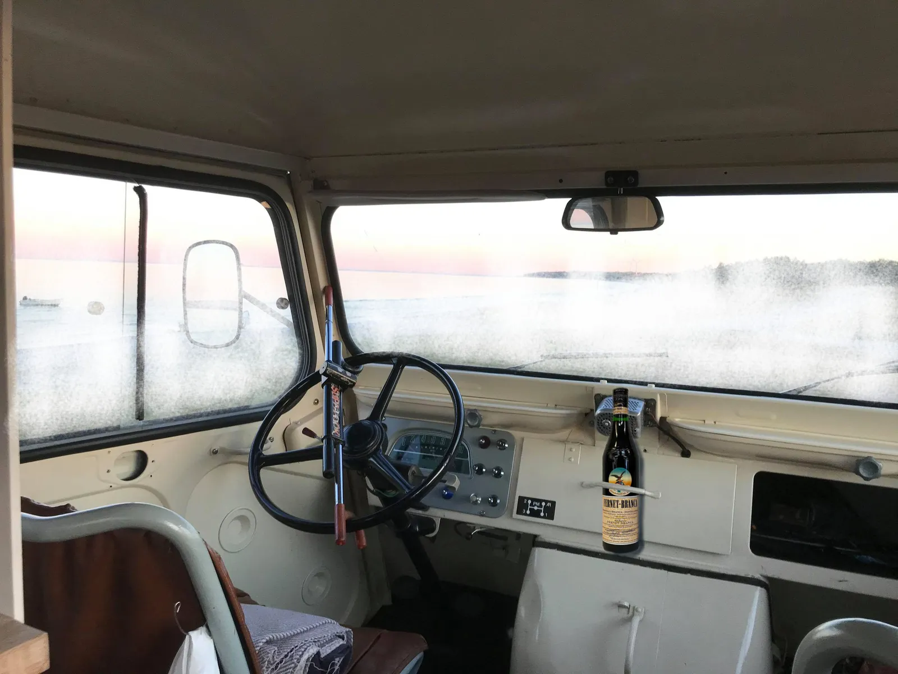

Rekognoscering forud for Mols Bjerge Grand Prix 2021

Squadra Molteni har fået et wildcard til Mols Bjerge Grand Prix 2021 – og stiller til start med 8-9 ryttere. Holdbussen med Grane Maaløe og Jens Langergaard er derfor sendt på rekognoscering i området. Molteni HQ har fået netop fået tilsendt friske billeder og beretning fra de udsendte.
Det er helt normal procedure, at Squadra Molteni sender en eller to ryttere ud på rekognoscering forud for et løb. Derfor satte Grane Maaløe og Jens Langergaard i går afsted mod Mols Bjerge, for at cykle ruten til Mols Bjerge Grand Prix 2021 igennem.
Jamen, da vi kommer til Mols, kan vi jo se, at vejene ikke er ryddet for sne. Så vi må jo gennemkøre ruten på ski, fortæller Grane Maaløe.
Det er jo en 110 km rute, så vi var lidt trætte i stængerne i går aftes. Men vi lavede en god fordeling af rekognosceringen: Grane stod for de flade segmenter – og jeg tog mig af nedkørslerne, siger Jens Langergaard.

Helt ny teknologi
Som noget nyt er Squadra Molteni begyndt at bruge en helt ny teknologi i forbindelse med rekognoscering af ruter. Der et tale om en såkaldt medvinds-segmentmåler. En sådan måler, er ikke bare en normal vindmåler, der jo i princippet kun kan måle modvind. Squadra Moltenis nye medvinds-segmentmåler, er i stand til at måle medvind!
Det er et instrument, som jeg har udviklet i samarbejde med Dr. Lövenmesser fra Institut für Aerodynamik i Rostock. Det er en genial lille opfindelse. Den er i stand til at måle nøjagtigt, hvor der på ruten er medvind. Og der er på de segmenter, at vi kommer til at stikke i højre og venstre, afslører Grane Maaløe.
Fernet Branca og snekæder
Efter en nat i holdbussen meddeler Grane og Jens, at de er klar til at sætte kursen mod Molteni HQ i Vejle, hvor der ligger endnu mere sne. Men de to rekognoscister har forberedt sig godt.
Vi startede dagen ved solopgang med to store soveposevarme Fernet Brancas. Det kick-starter hele systemet. Men det kan godt være, at jeg skal have én mere, når jeg har været ude at skrabe vinduerne og fået sat snekæder på holdbussen, fortæller Jens Langergaard.

Mols Bjerge Grand Prix køres den 12. april 2021 med start og mål ved Mols Hallen i Knebel.